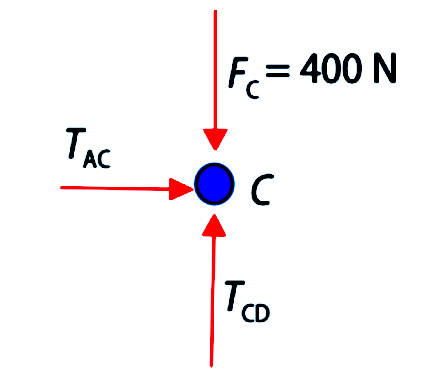
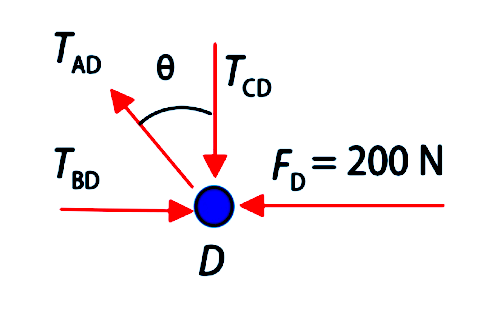
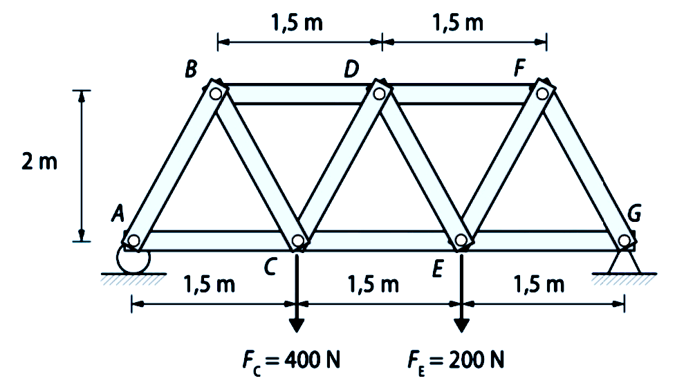
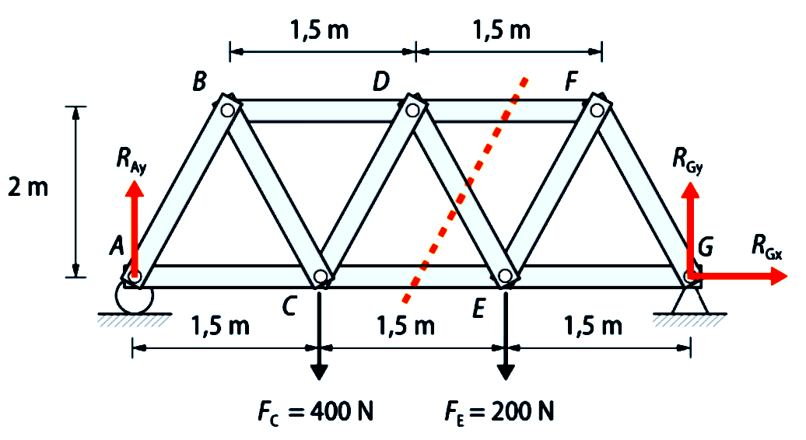

Las estructuras de barras articuladas se utilizan en grúas, torres, puentes, etc. En la modelización de estas estructuras supondremos que son bidimensionales, como hemos hecho con las vigas.
También supondremos que:
- Los nudos son articulaciones perfectas.
- Las cargas externas están aplicadas exclusivamente en los nudos.
- Las deformaciones son despreciables frente a las dimensiones de las barras.
- El peso de las barras puede considerarse despreciable frente a las cargas externas.
Estas simplificaciones implican que las barras se ven solicitadas esencialmente a un esfuerzo dirigido a lo largo de su eje (axil).
Resolver una cercha supone calcular cómo trabajan todas las barras, y cada barra introduce sólo una incógnita, la magnitud del axil.
El sentido del axil podrá ser de tracción o compresión, dependiendo del signo que obtengamos.
| Tipo de Esfuerzo | Esquema |
|---|---|
| AXIL DE TRACCIÓN |  |
| AXIL DE COMPRESIÓN |  |
5.1 Sistemas isostáticos e hiperestáticos
Las estructuras articuladas se fijan mediante apoyos. Si llamamos \(b\) al número de barras y \(n\) al número de nudos, teniendo en cuenta el número de incógnitas en los apoyos (según las ecuaciones de equilibrio), los sistemas se clasifican así:
Exteriormente, en función del exceso o defecto de restricciones en los apoyos:
- Inestable: nº de incógnitas < 3
- Isostático: nº de incógnitas = 3
- Hiperestático: nº de incógnitas > 3
Interiormente, en función del exceso o defecto de barras:
- Inestable: \(b < 2n - 3\)
- Isostático: \(b = 2n - 3\)
- Hiperestático: \(b > 2n - 3\)
Por lo tanto, para que una estructura sea isostática, debe cumplirse que:
Nosotros nos limitaremos a ver estructuras isostáticas en este curso.

5.2 Métodos de cálculo de estructuras de barras
Estudiaremos tres métodos distintos para calcular los esfuerzos en las barras de las estructuras. Dos de esos métodos son analíticos y el tercero es un método gráfico. Son los siguientes:
- Método de los nudos: Consiste en aplicar el equilibrio a cada nudo de la estructura por separado.
- Método de las secciones (método de Ritter): Consiste en cortar la estructura en dos partes y aplicar el equilibrio a una de ellas. Útil para conocer el esfuerzo en barras concretas sin calcular toda la estructura.
- Método gráfico de Cremona: Método geométrico basado en el equilibrio de los polígonos de fuerzas de cada nudo.
5.3 Método de los nudos
Cuando una estructura articulada es isostática, puede analizarse por medio del método de los nudos. Al estar la estructura en equilibrio, supondremos en equilibrio todas sus barras y nudos, y obtendremos ecuaciones de equilibrio estático para cada barra y cada nudo.
Para utilizar este método seguimos los siguientes pasos:
- Calculamos las reacciones en los apoyos mediante las ecuaciones de equilibrio de toda la estructura.
- Obtenemos la ecuación de equilibrio para cada nudo para calcular la fuerza que ejerce cada barra sobre el nudo.
- La fuerza que ejerce el nudo sobre la barra será igual y de sentido contrario.
- Con esto sabremos si las fuerzas son de tracción o de compresión.
En la figura se representa una estructura de barras donde A es un apoyo articulado y B es un apoyo libre.
- Calcula el valor de las reacciones.
- Empleando el método de los nudos, calcula las tensiones de cada barra.

Comprobación de isostaticidad
Se trata de una estructura isostática exteriormente, ya que hay igual número de incógnitas (\(R_{AX}, R_{AY}, R_{BX}\)) que de ecuaciones (\(\sum F_x = 0; \sum F_y = 0; \sum M = 0\)).
También es isostática interiormente, ya que el número de barras \(b = 5\) cumple la condición \(b = 2n-3\) (siendo \(n=4\) el número de nudos).
1. Diagrama de fuerzas y Reacciones
Construimos el diagrama de cuerpo libre global:

Calculamos el valor de las reacciones en los apoyos A y B aplicando las ecuaciones de equilibrio global:
\[\begin{align} \sum F_x &= 0 \Rightarrow R_{Ax} + R_{Bx} - 200 = 0 \\ \sum F_y &= 0 \Rightarrow R_{Ay} - 400 = 0 \Rightarrow \mathbf{R_{Ay} = 400\,\text{N}} \\ \sum M_A &= 0 \Rightarrow R_{Bx}\cdot 1 - 200\cdot 1 - 400\cdot 1 = 0 \Rightarrow \mathbf{R_{Bx} = 600\,\text{N}} \end{align}\]
Sustituyendo \(R_{Bx}\) en la primera ecuación: \[R_{Ax} + 600 - 200 = 0 \Rightarrow \mathbf{R_{Ax} = -400\,\text{N}}\] (El signo negativo indica que \(R_{Ax}\) va hacia la izquierda).
2. Cálculo de tensiones (Método de los Nudos)
Analizamos el equilibrio de cada nudo por separado.
Nudo B

\[\begin{align} \sum F_x &= 0 \Rightarrow R_{Bx} - T_{BD} = 0 \Rightarrow T_{BD} = 600\,\text{N}\ (\text{compresión}) \\ \sum F_y &= 0 \Rightarrow T_{AB} = 0\,\text{N} \end{align}\]
Nudo C

\[\begin{align} \sum F_x &= 0 \Rightarrow T_{AC} = 0\,\text{N} \\ \sum F_y &= 0 \Rightarrow -F_C + T_{CD} = 0 \Rightarrow T_{CD} = 400\,\text{N}\ (\text{compresión}) \end{align}\]
Nudo D

Por la geometría de la estructura (cuadrado de \(1\times1\)), el ángulo de la barra diagonal AD es \(\theta = 45^\circ\).
\[ \sum F_y = 0 \Rightarrow T_{AD}\cos\theta - T_{CD} = 0 \] \[ T_{AD} = \frac{T_{CD}}{\cos\theta} = \frac{400}{\cos 45^\circ} = \mathbf{565,68\,\text{N}\ (\text{tracción})} \]
5.4 Método de las secciones (Ritter)
Se utiliza cuando queremos estudiar una barra en concreto y no la totalidad de la estructura.
Consiste en lo siguiente:
- Cortamos la estructura por una sección que intersecte tres barras.
- Eliminamos una de las dos partes en las que ha quedado dividida la estructura.
- Aplicamos en la otra parte las tres ecuaciones de equilibrio.
Empleando el método de las secciones, o de Ritter, calcula las tensiones de las barras CE, ED y DF de la siguiente estructura de barras, donde A es un apoyo libre y G es un apoyo articulado.

Comprobación de isostaticidad
Se trata de una estructura isostática exteriormente, ya que hay igual número de incógnitas (\(R_{Ay}, R_{Gx}, R_{Gy}\)) que de ecuaciones (\(\sum F_x = 0; \sum F_y = 0; \sum M = 0\)), y también es isostática interiormente, ya que el número de barras \(b = 11\) cumple \(b = 2n-3\) (siendo \(n=7\) el número de nudos).
1. Cálculo de Reacciones
Calculamos primero las reacciones con las ecuaciones de equilibrio de la estructura global:

Con la suma de momentos en G podemos calcular directamente la reacción \(R_{Ay}\):
\[\sum M_G = 0 \Rightarrow R_{Ay} \cdot 4,5 - 400 \cdot 3 - 200 \cdot 1,5 = 0 \Rightarrow \mathbf{R_{Ay} = 333,33\,\text{N}}\]
Con la suma de fuerzas verticales calculamos la reacción \(R_{Gy}\):
\[\sum F_y = 0 \Rightarrow R_{Gy} = 600 - 333,33 = \mathbf{266,66\,\text{N}}\]
Por último, la reacción \(R_{Gx}\), es claramente nula al ser la única fuerza horizontal:
\[\sum F_x = 0 \Rightarrow \mathbf{R_{Gx} = 0\,\text{N}}\]
2. Aplicación del Método de Ritter
A continuación realizamos la sección de la estructura por tres barras, tal y como se ve en la imagen:

Cogemos el lado izquierdo del corte, realizamos el diagrama de cuerpo libre y dibujamos las tensiones de las barras. Escogemos todas las tensiones como de tracción, es decir, salen del nudo. Si luego nos salen negativas, será que en realidad son de compresión:

Cálculo de \(T_{DF}\): Ponemos la ecuación de momento nulo en el nudo E. Como las tensiones \(T_{CE}\) y \(T_{DE}\) pasan por él, no generan momento y nos las quitamos. Por lo tanto, podemos calcular directamente la tensión \(T_{DF}\):
\[\sum M_E = 0 \Rightarrow 333,33 \cdot 3 - 400 \cdot 1,5 + T_{DF} \cdot 2 = 0 \Rightarrow \mathbf{T_{DF} = -200\,\text{N}}\]
Como sale negativa, resulta que es un esfuerzo de compresión.
Cálculo de \(T_{DE}\): Con el equilibrio de fuerzas en el eje vertical, podemos calcular la tensión \(T_{DE}\):
\[\sum F_y = 0 \Rightarrow R_{Ay} - F_C - T_{DE}\cos\alpha = 0\]
El ángulo \(\alpha\) lo podemos calcular fácilmente de la geometría de la estructura: \[\alpha = \tan^{-1}\!\left(\frac{0,75}{2}\right) = 20,55^\circ\]
Por lo tanto: \[333,33 - 400 - T_{DE}\cos 20,55^\circ = 0 \Rightarrow \mathbf{T_{DE} = -71,20\,\text{N}}\]
De nuevo sale negativa, por lo que es un esfuerzo de compresión.
Cálculo de \(T_{CE}\): Por último, con la suma de fuerzas horizontales obtenemos la tensión que nos falta, \(T_{CE}\):
\[\sum F_x = 0 \Rightarrow T_{CE} + T_{DF} + T_{DE}\sin 20,55^\circ = 0\] \[T_{CE} - 200 - 71,2 \sin 20,55^\circ = 0 \Rightarrow \mathbf{T_{CE} = 224,99\,\text{N}}\]
En esta ocasión, al salir positiva, es un esfuerzo de tracción.
5.5 Método gráfico de Cremona
El método de Cremona es un procedimiento gráfico basado en el método de los nudos.
Consiste en lo siguiente:
- Dibujamos la estructura indicando las cargas y calculando las reacciones.
- Asignamos un número a cada zona del perímetro externo situada entre dos fuerzas (ya sean cargas o reacciones).
- Asignamos un número a cada zona interna situada entre las barras de la estructura.
- Dibujamos el polígono de fuerzas exteriores y reacciones.
- Consideramos cada nudo aisladamente, estableciendo dos ecuaciones de equilibrio para cada nudo. Comenzaremos por un nudo en el que concurran dos barras.
- Operamos con nudos sucesivos, eligiéndolos de forma que al resolverlos sólo existan dos barras cuyas fuerzas sean desconocidas.
- Determinamos las incógnitas teniendo en cuenta que las fuerzas exteriores e interiores constituyen polígonos cerrados.
- Iniciamos la construcción de gráficas. Dibujaremos polígonos cerrados de fuerzas para cada uno de los nudos, combinados de forma que cada fuerza actuante en una barra, que será común a dos nudos, solamente se represente una vez.
- Medimos las fuerzas en el polígono de Cremona y las pasamos a una tabla. Las tensiones que se acerquen al nudo serán de compresión y las que se alejen serán de tracción.
Como siempre, lo veremos mejor con un ejemplo resuelto.
Empleando el método gráfico de Cremona, calcula las tensiones de las barras de la siguiente estructura de barras, donde A es un apoyo articulado y D es un apoyo libre.

Comprobación de isostaticidad
Se trata de una estructura isostática exteriormente, ya que hay igual número de incógnitas (\(R_{Ax}, R_{Ay}, R_{Dy}\)) que de ecuaciones (\(\sum F_x = 0; \sum F_y = 0; \sum M = 0\)).
También es isostática interiormente, ya que el número de barras \(b = 7\) cumple \(b = 2n-3\) (siendo \(n=5\) el número de nudos).
1. Cálculo de Reacciones
Calculamos primero las reacciones con las ecuaciones de equilibrio de la estructura global:

\[\begin{align*} \sum M_A &= 0 \Rightarrow R_{Dy}\cdot 8 - 4\cdot 6 - 2\cdot 2 = 0 \Rightarrow \mathbf{R_{Dy} = 3,5\,\text{kN}} \\ \sum F_y &= 0 \Rightarrow R_{Ay} = 4 - R_{Dy} = \mathbf{0,5\,\text{kN}} \\ \sum F_x &= 0 \Rightarrow \mathbf{R_{Ax} = 2\,\text{kN}} \end{align*}\]
2. Numeración de Zonas (Notación de Bow)
Numeramos las barras y asignamos un número a cada zona del perímetro externo situado entre dos fuerzas (acciones o reacciones) y luego a las zonas internas.
Las zonas del perímetro serán, en este caso, 1, 2, 3, 4 y 5, mientras que las zonas internas serán 6, 7 y 8:

3. Construcción del Polígono de Fuerzas (Cremona)
Ahora dibujamos el polígono de fuerzas externas, que estará formado por los números de las zonas externas (es decir, del 1 al 5). Para dibujarlo, operamos como sigue:
- Situamos el número 1.
- Trazamos desde el número 1 una línea paralela a la fuerza que hay entre 1 y 2 (en este caso \(R_{AX}\)), y elegimos una escala para marcar una distancia que corresponda al valor de dicha fuerza (por ejemplo, 1 cm = 1 kN).
- Una vez situado el número 2, repetimos el procedimiento anterior para situar el 3.
- Continuamos hasta llegar al último número (en este caso el 5), comprobando que desde él hacia el 1 el polígono queda cerrado (es decir, que terminamos de nuevo sobre el número 1).

Sobre el diagrama de Cremona, empezamos a dibujar los números de las zonas internas, correspondientes a las barras que concurren en un nudo con sólo dos incógnitas. Para ello, recorremos el nudo en SENTIDO HORARIO: mirando, por ejemplo, el nudo A, la numeración es 1-2-6-5. Lo que estamos haciendo es sumar las fuerzas que actúan en cada nudo en un determinado orden.
El nº 6 es el único que no está situado en el diagrama. Vemos cómo situarlo:
- La barra AB corresponderá en el diagrama a un segmento entre 2 y 6. Por tanto, trazamos desde 2 una línea paralela a la barra AB.
- La barra AE corresponderá en el diagrama a un segmento entre 6 y 5. Por tanto, trazamos desde 5 una línea paralela a la barra AE.
- En el punto donde se corten estas dos líneas, estará el punto 6.
Seguimos por el nudo B: dibujamos los segmentos de las barras del nudo B.
- La barra BC corresponderá en el diagrama a un segmento entre 3 y 7. Por tanto, trazamos desde 3 una línea paralela a la barra BC.
- La barra BE corresponderá en el diagrama a un segmento entre 7 y 6. Por tanto, trazamos desde 6 una línea paralela a la barra BE.
- En el punto donde se corten estas dos líneas, estará el número 7.
Seguimos con el nudo C:
- La barra CD corresponderá en el diagrama a un segmento entre 4 y 8. Por tanto, trazamos desde 4 una línea paralela a la barra CD.
- La barra CE corresponderá en el diagrama a un segmento entre 8 y 7. Por tanto, trazamos desde 7 una línea paralela a la barra CE.
- En el punto donde se corten estas dos líneas, estará el punto 8.
Finalizamos con el nudo D:
- La barra ED corresponderá en el diagrama a un segmento entre 5 y 8. Por tanto, unimos los puntos 5 y 8 del diagrama y obtendremos una línea paralela a la barra ED que nos representa ya el axil \(T_{ED}\).
4. Medición de Resultados

Directamente sobre el diagrama medimos las magnitudes de los axiles. Los que se acerquen al nudo B serán de compresión y los que se alejen serán de tracción:
- \(T_{AB} = 0,707 \text{ kN}\) (compresión)
- \(T_{AE} = 2,5 \text{ kN}\) (tracción)
- \(T_{BC} = 3 \text{ kN}\) (compresión)
- \(T_{BE} = 0,707 \text{ kN}\) (tracción)

Los valores que faltaban por medir son estos:
- \(T_{CD} = 4,95 \text{ kN}\) (compresión)
- \(T_{CE} = 0,707 \text{ kN}\) (compresión)
- \(T_{ED} = 3,5 \text{ kN}\) (tracción)